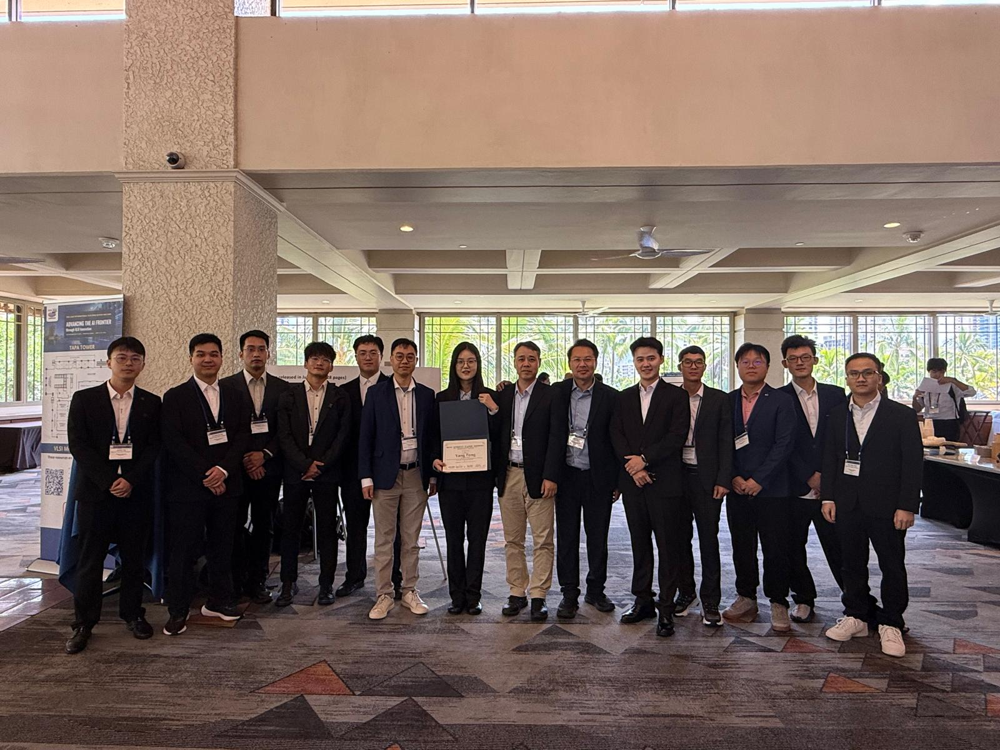
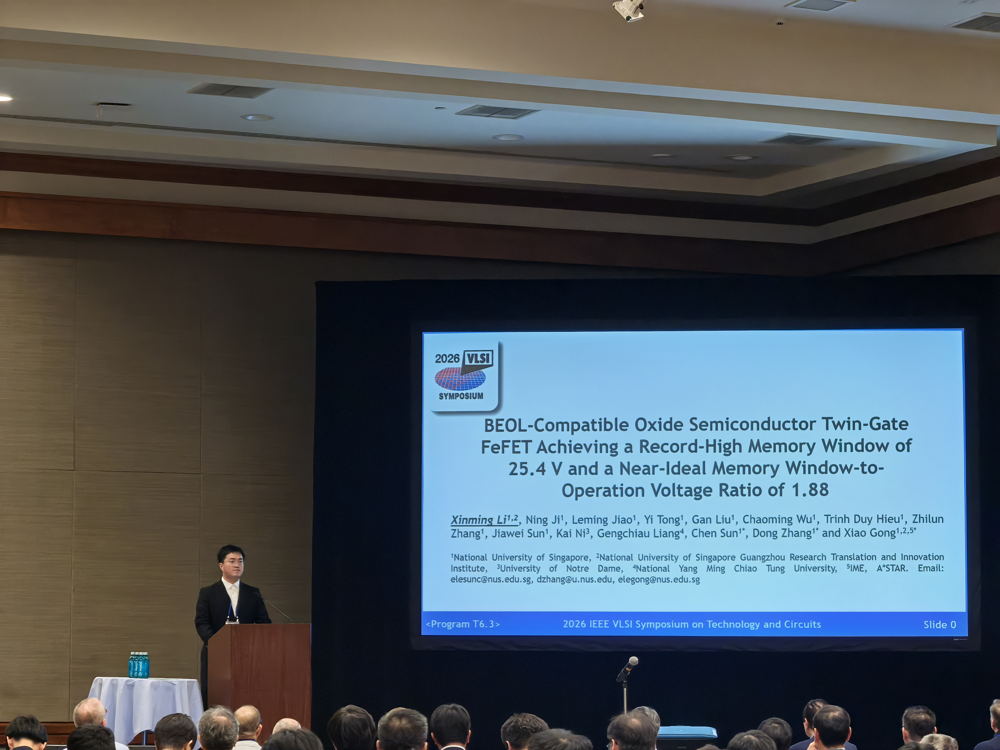
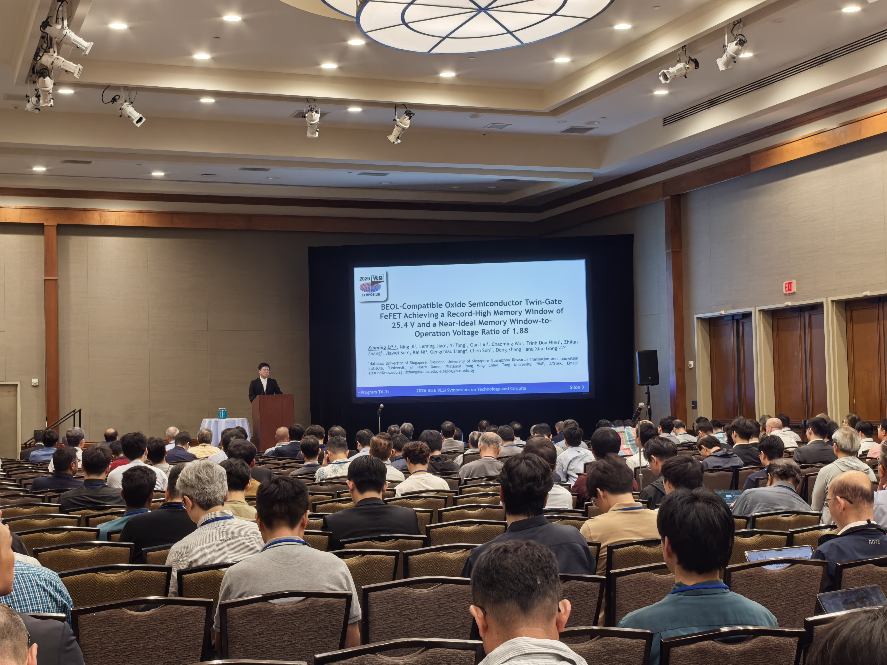
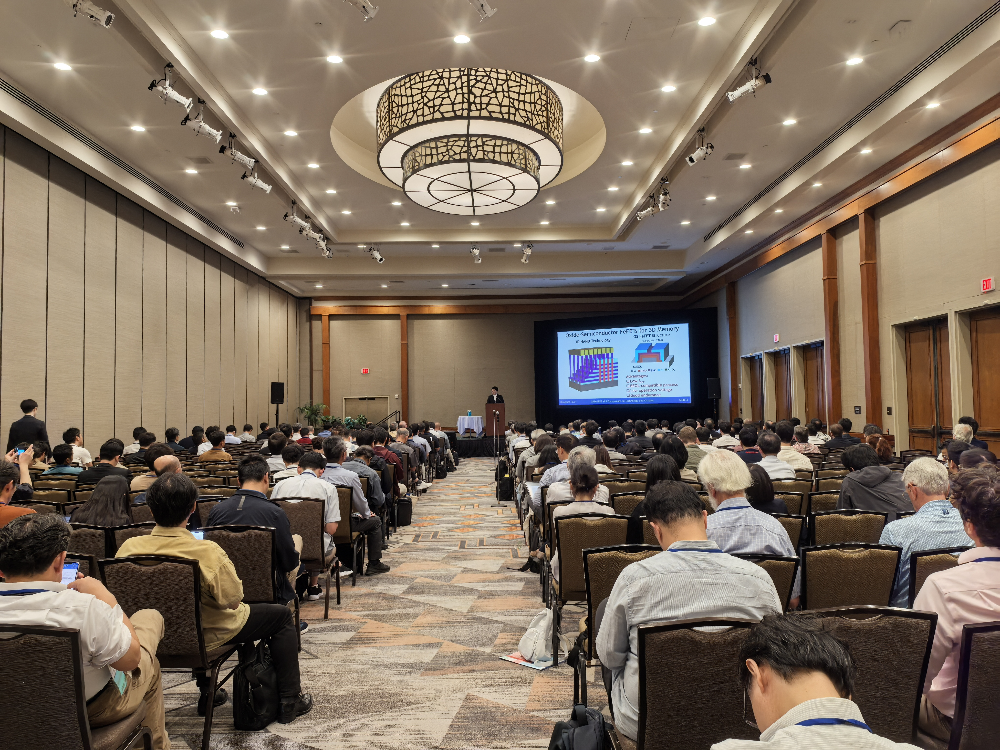

My First Academic Conference Presentation at VLSI 2026
In June 2026, I attended VLSI 2026 in Hawaii for my first academic conference presentation, where I shared our work on twin-gate OS-FeFETs and gained valuable experience through discussions with researchers from around the world.
My First Academic Conference
In June 2026, I attended the IEEE Symposium on VLSI Technology and Circuits in Hawaii. This was my first time attending an academic conference, and it was also my first time giving a formal conference presentation.
For me, this experience was exciting, nervous, and unforgettable. VLSI is one of the top conferences in the field of microelectronics, and my presentation is in the same session with IBM, Intel and Samsung. So, having the opportunity to present my work there was an important milestone in my Ph.D. journey.
My Presentation
At the conference, I presented our work titled “BEOL-Compatible Oxide Semiconductor Twin-Gate FeFET Achieving a Record-High Memory Window of 25.4 V and a Near-Ideal Memory Window-to-Operation Voltage Ratio of 1.88.”
This work focuses on oxide-semiconductor ferroelectric field-effect transistors, also known as OS-FeFETs, which are promising candidates for future high-density and BEOL-compatible memory technologies.
Core Highlights of the Work
The key idea of our work is to introduce a twin-gate FeFET architecture together with a carefully engineered interlayer. This design provides additional freedom to control the voltage distribution across the gate stack, thereby enhancing ferroelectric switching and improving memory performance.
One of the main highlights is that our device achieves a record-high memory window of 25.4 V at an operation voltage of 13.5 V, corresponding to a near-ideal memory-window-to-operation-voltage ratio of 1.88. In addition, the device maintains a memory window larger than 15 V after 10^7 endurance cycles, showing a promising balance between large memory window and high endurance.
These results suggest that the proposed twin-gate FeFET architecture may provide a scalable pathway toward high-performance and energy-efficient memory devices for future AI hardware.
Communication and Acknowledgement
Beyond the presentation itself, I was very glad to communicate with scholars and researchers from different countries. Through these discussions, I learned more about current research trends in microelectronics, memory devices, and advanced semiconductor technologies.
I would like to sincerely thank Prof. Xiao Gong for his guidance and support throughout this work. I am also very grateful to Dr. Chen Sun for his valuable help and suggestions during the research and presentation preparation.
Overall, attending VLSI 2026 was a very important experience for me. It not only gave me the opportunity to present my research at an international conference, but also helped me build more confidence in communicating my ideas with researchers from around the world.



